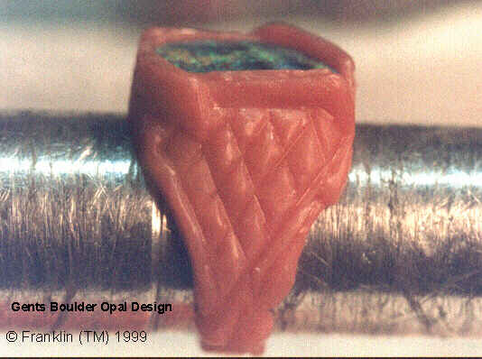
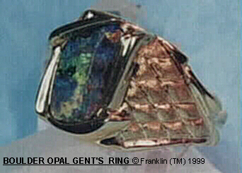
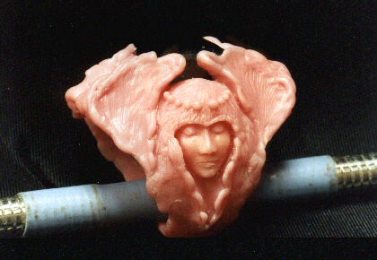
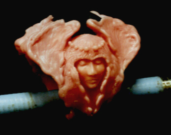
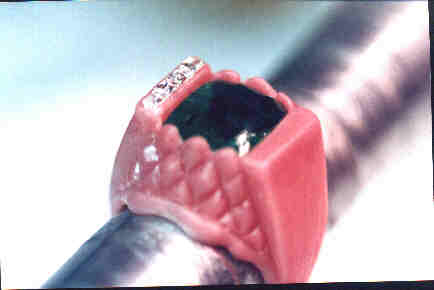
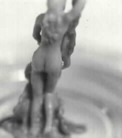
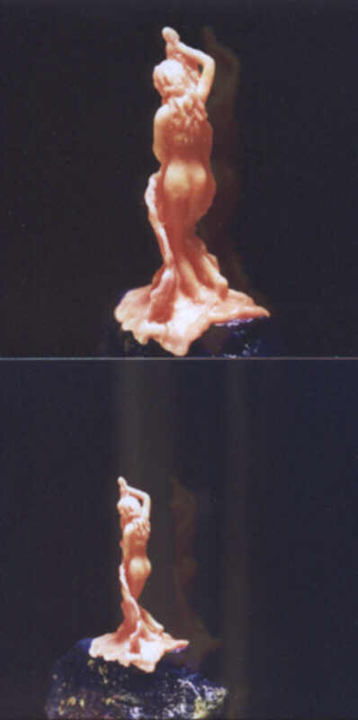
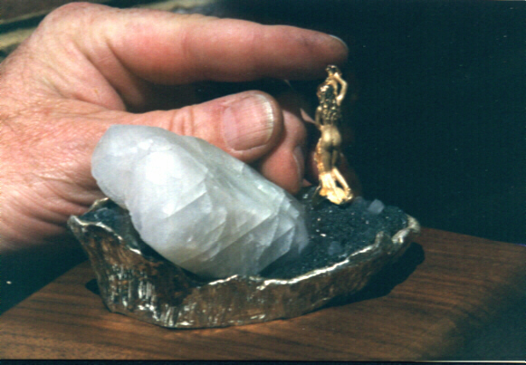
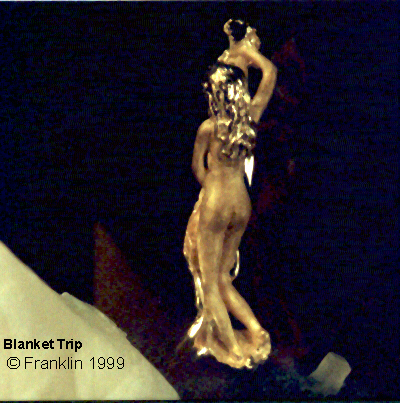

- home - Art - Designs by Elias - Wax Models Page One -
~
A wax model for a Boulder Opal as a gents' finger ring.

18 Karat yellow gold and Boulder Opal gents' finger ring.

~
Below we see one side of a wax carving for a large chrome-green tourmaline. I was never certain what I was trying to do with this design, but the design took a life of its own and I was able to get several photographs of the piece during its evolution. The little lady sits on the side of the finger-ring, and the finger of the owner fits where the blue-handled wax tool is seen in this photo.

Another view in a more subdued lighting.

~
Photo of wax model of large Emerald ring as shown in Colored Stone Jewelry page.

~
Here we have a picture of a very small wax sculpture. She stands one-and-a-quarter inch tall, and is in a "high-tension" pose. This little lady is about to fall forward into a blanket behind which she is trying to hide as someone has entered her room, but her feet are on the blanket and her knees are bent forward and she does not know whether to fall to her knees or to lower the blanket.

Next we see two colored photos of the little lady as she was standing on a forty-five carat piece of uncut lapis lazuli from Afghanistan.

Once this wax model was cast into 18 Karat yellow gold I mounted her next to a large Calcite crystal specimen which had erupted from a bed of Drusy by pinning her feet into the Drusy. I then surrounded the entire specimen with a six-ounce cast base of Sterling Silver, and I bolted that to a Walnut wooden base and attached a signature plate on the front of the base.

I went to a local Dentist's office and sandblasted her "skin", then contrasted that by high-polishing her hair. In this enlarged photo we may see that during the 1970s, 1980s and 1990s I created jewelry in the name "Franklin". Having closed my retail store in Georgia and moved to Montana, I ceased in 2000 making original jewelry and sculpture designs. Now it is early 2008, and I am preparing to return to design work under the name Elias Alias.

Thank you for viewing.
- home - Art - Designs by Elias - Wax Models Page One -
~